Совмещение фотографий: связи, группы и конфликты
Главный результат
Проверены все 253 выбранные пары; предварительного отсева по SIFT нет. Все фотографии сохранены, включая одиночные компоненты. Отказ совмещения не доказывает отсутствие перекрытия.
| Сочетание | Принято пар | Мало соответствий | Размеры групп | Расхождения / проверки циклов |
|---|---|---|---|---|
| RoMa × MetricAnything | 26/253 | 93 | 19; одиночных: 4 | 5/8 |
| RoMa × MoGe-2 | 37/253 | 93 | 21, 2 | 4/16 |
| SIFT × MetricAnything | 5/253 | 197 | 3, 2, 2; одиночных: 16 | 0/1 |
| SIFT × MoGe-2 | 7/253 | 197 | 3, 2, 2, 2, 2; одиночных: 12 | 0/1 |
Для подгонки и отложенной проверки требуется не менее 20 соответствий в каждой части. Одинаковые пороги сильнее ограничивают разреженный SIFT; число принятых пар не является оценкой точности.
Группы не равны комнатам. Принятые связи могут быть ложными; ноль конфликтов при одном проверенном цикле не подтверждает всю сцену. Совместное уточнение поз не выполнено.
Разобранный случай: img_11_a ↔ img_4_a — отмечено ложное совмещение похожих углов. Решения всех сочетаний сохранены.
Группы и 3D
Каждое сочетание сопоставителя и глубины имеет собственные связи, позы и компоненты. Наличие связи означает прохождение внутренних проверок, а не подтверждённое перекрытие.
Схема связей, не план квартиры. Ребро открывает пару, фото — подробности. Положение компонент относительно друг друга не определено.
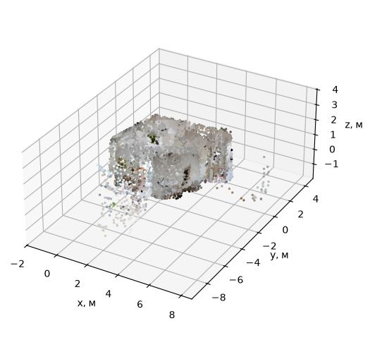
Все фото · часть 1 · 21 фотоRoMa × MoGe-2 · циклов 16 · предупреждений 4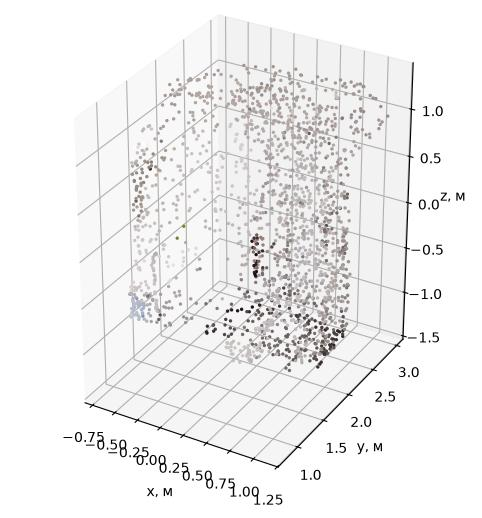
Все фото · часть 2 · 2 фотоRoMa × MoGe-2 · циклов 0 · предупреждений 0Все замыкания циклов
Сравнены прямое ребро и путь по остову. Предупреждение: >15° или >0,3 м. Это не ошибка относительно эталона и не указание, какое именно ребро неверно.
| Замыкающее ребро | Поворот | Перенос, м | Проверка |
|---|---|---|---|
| img_3 ↔ img_7 | 3.91° | 2.277 | Расхождение |
| img_16_a ↔ img_3 | 7.21° | 0.780 | Расхождение |
| img_16_a ↔ img_6 | 11.84° | 0.545 | Расхождение |
| img_14 ↔ img_18 | 3.46° | 0.333 | Расхождение |
| img_14 ↔ img_15 | 2.59° | 0.234 | В пределах порогов |
| img_14 ↔ img_9 | 2.33° | 0.192 | В пределах порогов |
| img_12 ↔ img_6 | 4.91° | 0.189 | В пределах порогов |
| img_14 ↔ img_2 | 1.48° | 0.127 | В пределах порогов |
| img_2 ↔ img_3 | 3.34° | 0.126 | В пределах порогов |
| img_11_b ↔ img_9 | 2.19° | 0.121 | В пределах порогов |
| img_18 ↔ img_2 | 0.53° | 0.065 | В пределах порогов |
| img_15 ↔ img_9 | 1.17° | 0.056 | В пределах порогов |
| img_11_b ↔ img_3 | 0.52° | 0.052 | В пределах порогов |
| img_10 ↔ img_4_a | 1.73° | 0.040 | В пределах порогов |
| img_15 ↔ img_2 | 0.54° | 0.036 | В пределах порогов |
| img_17_b ↔ img_7 | 2.79° | 0.030 | В пределах порогов |
Схема связей, не план квартиры. Ребро открывает пару, фото — подробности. Положение компонент относительно друг друга не определено.
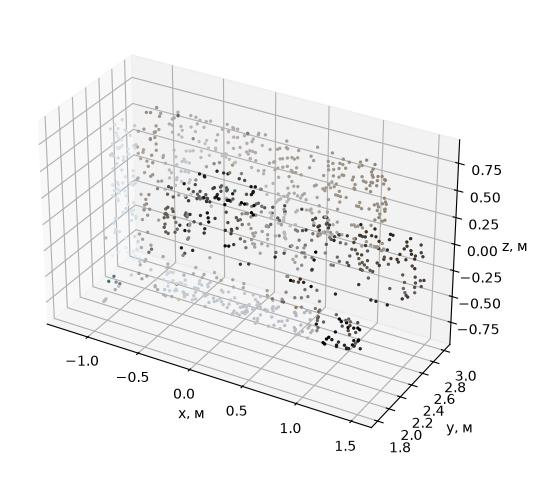
Все фото · часть 1 · 1 фотоRoMa × MetricAnything · циклов 0 · предупреждений 0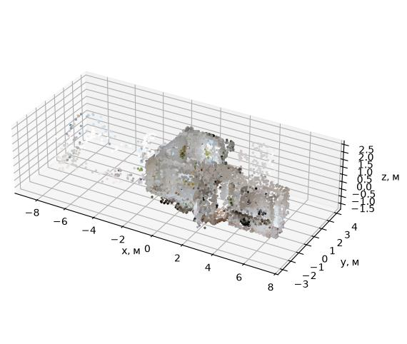
Все фото · часть 2 · 19 фотоRoMa × MetricAnything · циклов 8 · предупреждений 5 Все фото · часть 3 · 1 фотоRoMa × MetricAnything · циклов 0 · предупреждений 0
Все фото · часть 3 · 1 фотоRoMa × MetricAnything · циклов 0 · предупреждений 0 Все фото · часть 4 · 1 фотоRoMa × MetricAnything · циклов 0 · предупреждений 0
Все фото · часть 4 · 1 фотоRoMa × MetricAnything · циклов 0 · предупреждений 0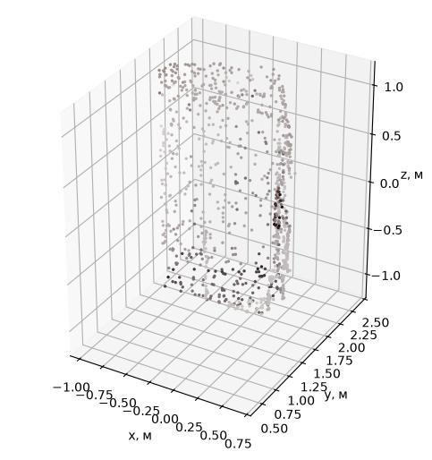
Все фото · часть 5 · 1 фотоRoMa × MetricAnything · циклов 0 · предупреждений 0Все замыкания циклов
Сравнены прямое ребро и путь по остову. Предупреждение: >15° или >0,3 м. Это не ошибка относительно эталона и не указание, какое именно ребро неверно.
| Замыкающее ребро | Поворот | Перенос, м | Проверка |
|---|---|---|---|
| img_3 ↔ img_7 | 85.28° | 9.407 | Расхождение |
| img_17_a ↔ img_7 | 84.47° | 8.855 | Расхождение |
| img_2 ↔ img_3 | 88.89° | 5.768 | Расхождение |
| img_17_b ↔ img_3 | 85.62° | 3.634 | Расхождение |
| img_11_a ↔ img_7 | 6.31° | 0.498 | Расхождение |
| img_14 ↔ img_2 | 1.50° | 0.086 | В пределах порогов |
| img_15 ↔ img_2 | 1.04° | 0.056 | В пределах порогов |
| img_10 ↔ img_4_a | 1.39° | 0.027 | В пределах порогов |
Схема связей, не план квартиры. Ребро открывает пару, фото — подробности. Положение компонент относительно друг друга не определено.
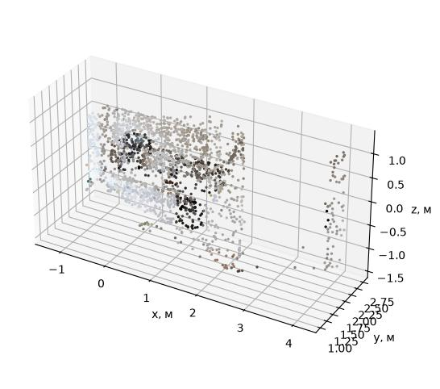
Все фото · часть 1 · 2 фотоSIFT × MoGe-2 · циклов 0 · предупреждений 0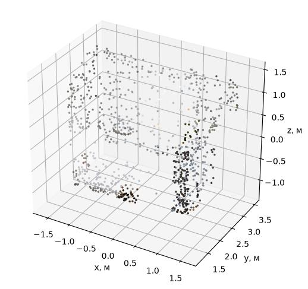
Все фото · часть 2 · 1 фотоSIFT × MoGe-2 · циклов 0 · предупреждений 0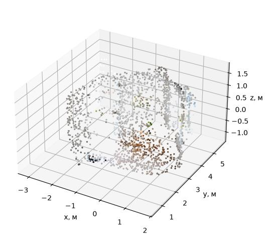
Все фото · часть 3 · 2 фотоSIFT × MoGe-2 · циклов 0 · предупреждений 0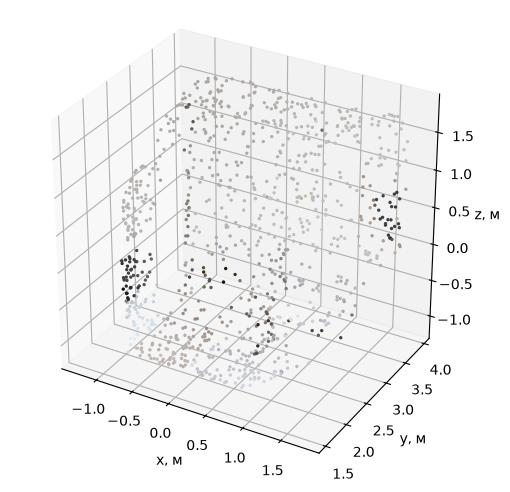
Все фото · часть 4 · 1 фотоSIFT × MoGe-2 · циклов 0 · предупреждений 0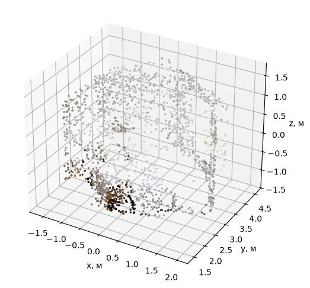
Все фото · часть 5 · 2 фотоSIFT × MoGe-2 · циклов 0 · предупреждений 0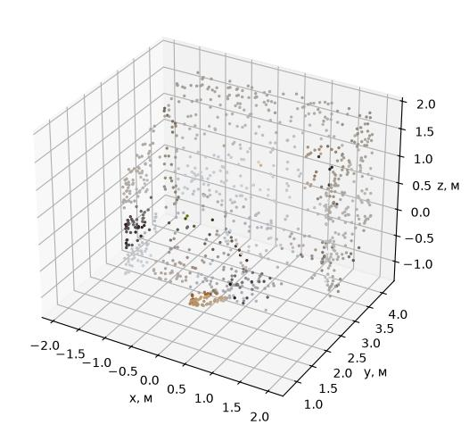
Все фото · часть 6 · 1 фотоSIFT × MoGe-2 · циклов 0 · предупреждений 0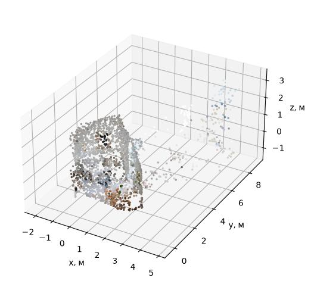
Все фото · часть 7 · 3 фотоSIFT × MoGe-2 · циклов 1 · предупреждений 0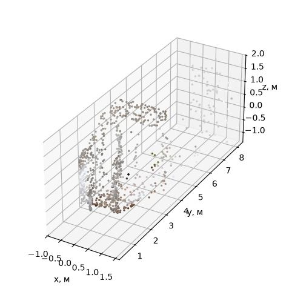
Все фото · часть 8 · 1 фотоSIFT × MoGe-2 · циклов 0 · предупреждений 0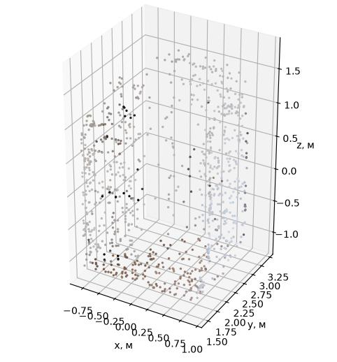
Все фото · часть 9 · 1 фотоSIFT × MoGe-2 · циклов 0 · предупреждений 0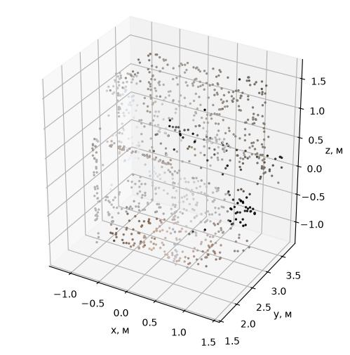
Все фото · часть 10 · 1 фотоSIFT × MoGe-2 · циклов 0 · предупреждений 0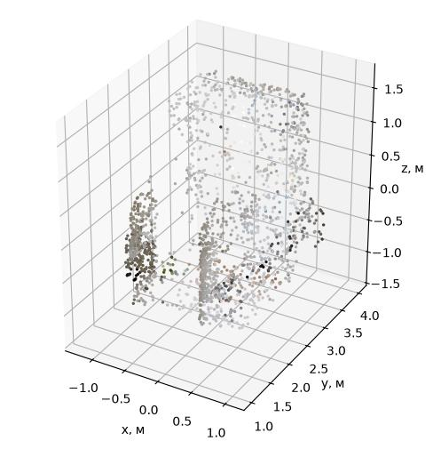
Все фото · часть 11 · 2 фотоSIFT × MoGe-2 · циклов 0 · предупреждений 0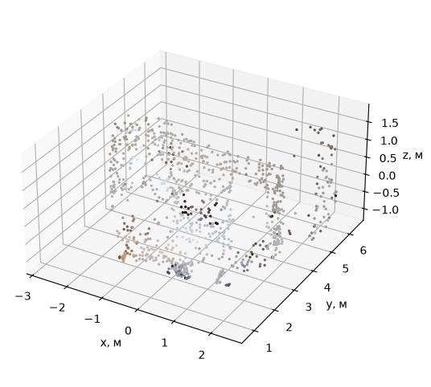
Все фото · часть 12 · 1 фотоSIFT × MoGe-2 · циклов 0 · предупреждений 0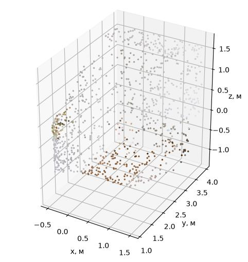
Все фото · часть 13 · 1 фотоSIFT × MoGe-2 · циклов 0 · предупреждений 0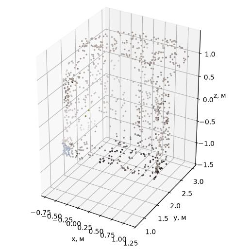
Все фото · часть 14 · 1 фотоSIFT × MoGe-2 · циклов 0 · предупреждений 0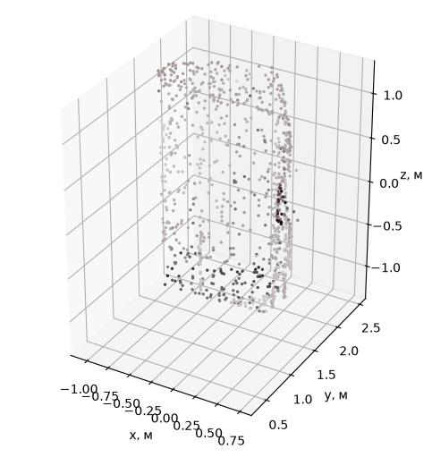
Все фото · часть 15 · 1 фотоSIFT × MoGe-2 · циклов 0 · предупреждений 0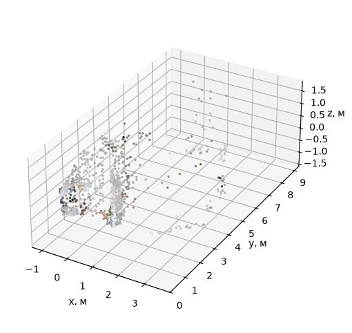
Все фото · часть 16 · 1 фотоSIFT × MoGe-2 · циклов 0 · предупреждений 0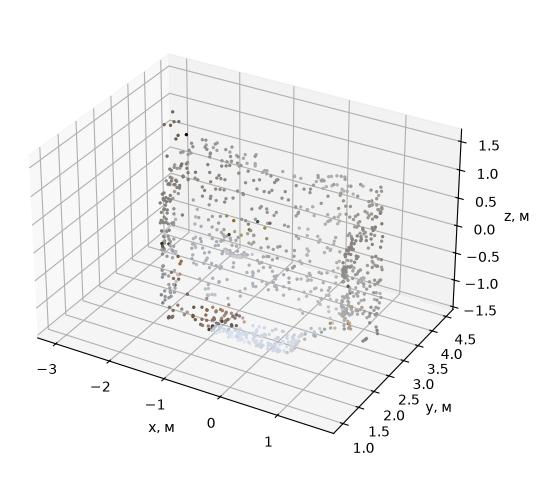
Все фото · часть 17 · 1 фотоSIFT × MoGe-2 · циклов 0 · предупреждений 0Все замыкания циклов
Сравнены прямое ребро и путь по остову. Предупреждение: >15° или >0,3 м. Это не ошибка относительно эталона и не указание, какое именно ребро неверно.
| Замыкающее ребро | Поворот | Перенос, м | Проверка |
|---|---|---|---|
| img_15 ↔ img_2 | 1.64° | 0.079 | В пределах порогов |
Схема связей, не план квартиры. Ребро открывает пару, фото — подробности. Положение компонент относительно друг друга не определено.
 Все фото · часть 1 · 1 фотоSIFT × MetricAnything · циклов 0 · предупреждений 0
Все фото · часть 1 · 1 фотоSIFT × MetricAnything · циклов 0 · предупреждений 0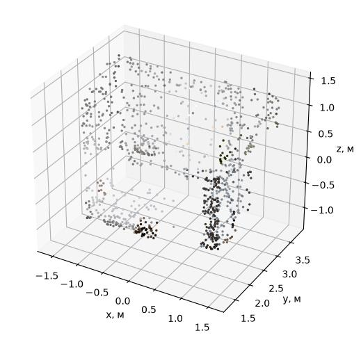
Все фото · часть 2 · 1 фотоSIFT × MetricAnything · циклов 0 · предупреждений 0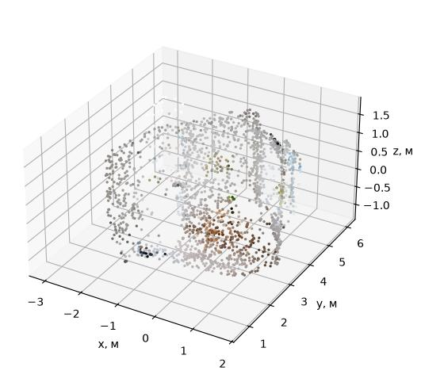
Все фото · часть 3 · 2 фотоSIFT × MetricAnything · циклов 0 · предупреждений 0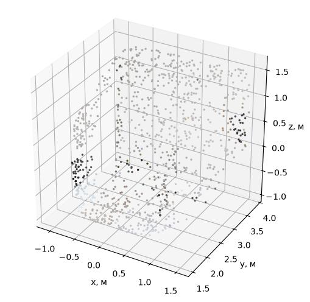
Все фото · часть 4 · 1 фотоSIFT × MetricAnything · циклов 0 · предупреждений 0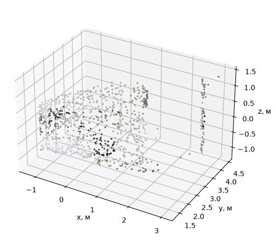
Все фото · часть 5 · 1 фотоSIFT × MetricAnything · циклов 0 · предупреждений 0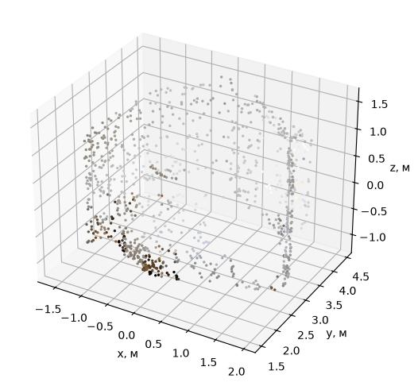
Все фото · часть 6 · 1 фотоSIFT × MetricAnything · циклов 0 · предупреждений 0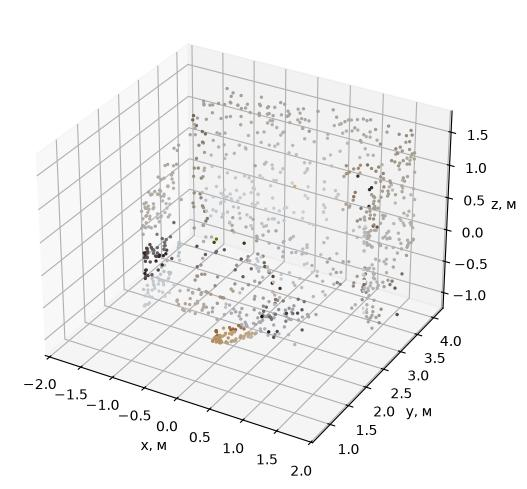
Все фото · часть 7 · 1 фотоSIFT × MetricAnything · циклов 0 · предупреждений 0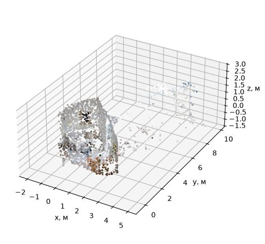
Все фото · часть 8 · 3 фотоSIFT × MetricAnything · циклов 1 · предупреждений 0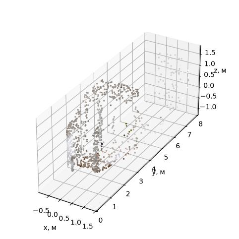
Все фото · часть 9 · 1 фотоSIFT × MetricAnything · циклов 0 · предупреждений 0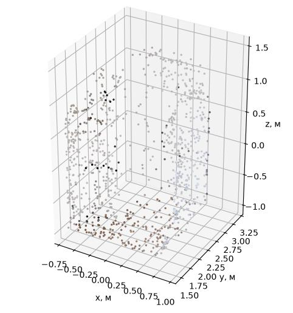
Все фото · часть 10 · 1 фотоSIFT × MetricAnything · циклов 0 · предупреждений 0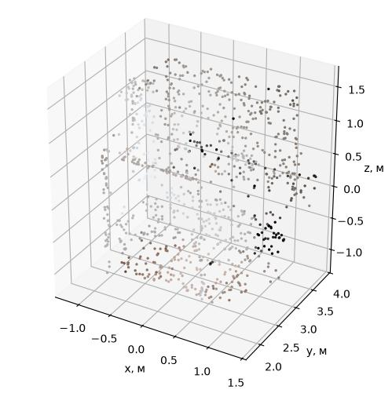
Все фото · часть 11 · 1 фотоSIFT × MetricAnything · циклов 0 · предупреждений 0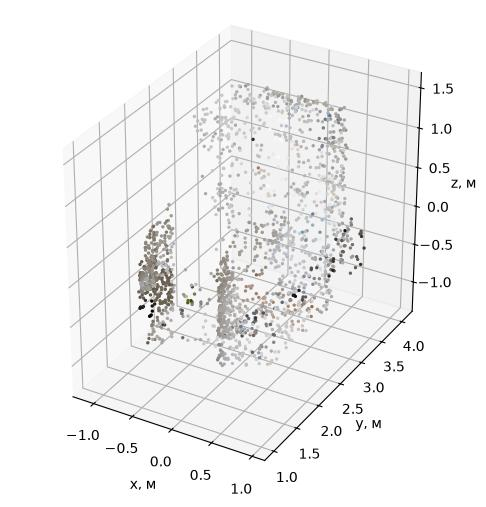
Все фото · часть 12 · 2 фотоSIFT × MetricAnything · циклов 0 · предупреждений 0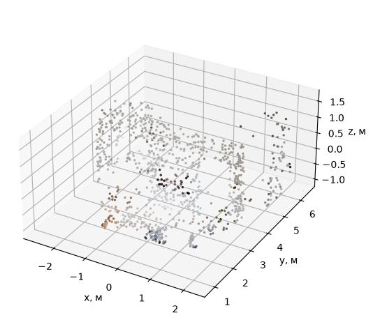
Все фото · часть 13 · 1 фотоSIFT × MetricAnything · циклов 0 · предупреждений 0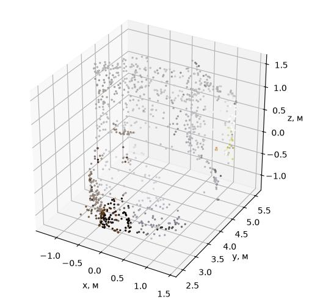
Все фото · часть 14 · 1 фотоSIFT × MetricAnything · циклов 0 · предупреждений 0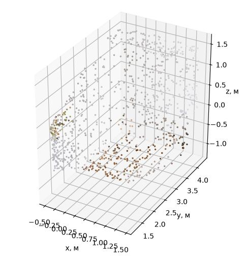
Все фото · часть 15 · 1 фотоSIFT × MetricAnything · циклов 0 · предупреждений 0 Все фото · часть 16 · 1 фотоSIFT × MetricAnything · циклов 0 · предупреждений 0
Все фото · часть 16 · 1 фотоSIFT × MetricAnything · циклов 0 · предупреждений 0 Все фото · часть 17 · 1 фотоSIFT × MetricAnything · циклов 0 · предупреждений 0
Все фото · часть 17 · 1 фотоSIFT × MetricAnything · циклов 0 · предупреждений 0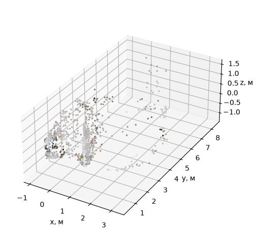
Все фото · часть 18 · 1 фотоSIFT × MetricAnything · циклов 0 · предупреждений 0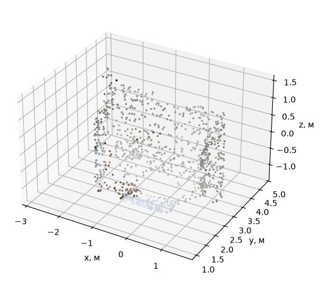
Все фото · часть 19 · 1 фотоSIFT × MetricAnything · циклов 0 · предупреждений 0Все замыкания циклов
Сравнены прямое ребро и путь по остову. Предупреждение: >15° или >0,3 м. Это не ошибка относительно эталона и не указание, какое именно ребро неверно.
| Замыкающее ребро | Поворот | Перенос, м | Проверка |
|---|---|---|---|
| img_15 ↔ img_9 | 1.96° | 0.103 | В пределах порогов |
Матрица пар
Нажатие открывает отчёт по всем сочетаниям, причины отказа и 3D-гипотезу, если она найдена.
| img_1 | img_10 | img_11_a | img_11_b | img_12 | img_13 | img_14 | img_15 | img_16_a | img_16_b | img_17_a | img_17_b | img_18 | img_2 | img_3 | img_4_a | img_4_b | img_5_a | img_5_b | img_6 | img_7 | img_8 | img_9 | |
|---|---|---|---|---|---|---|---|---|---|---|---|---|---|---|---|---|---|---|---|---|---|---|---|
 img_1 img_1 | × | × | × | × | × | × | × | × | × | × | × | × | × | × | × | × | × | × | × | × | × | × | |
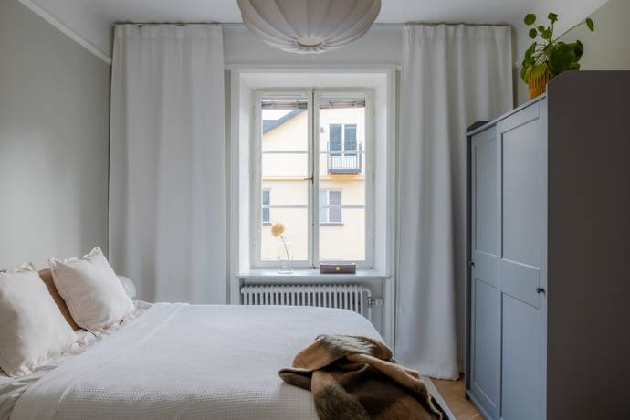 img_10 | × | × | × | × | + | × | × | × | × | × | × | × | × | × | + | × | × | × | × | × | × | × | |
 img_11_a img_11_a | × | × | × | × | × | × | × | × | × | × | × | + | × | × | + | × | × | × | × | + | × | × | |
 img_11_b img_11_b | × | × | × | × | × | + | × | × | × | × | × | × | × | × | × | × | × | × | × | × | × | × | |
 img_12 img_12 | × | × | × | × | × | × | × | + | × | + | × | × | × | × | × | × | × | × | + | × | × | × | |
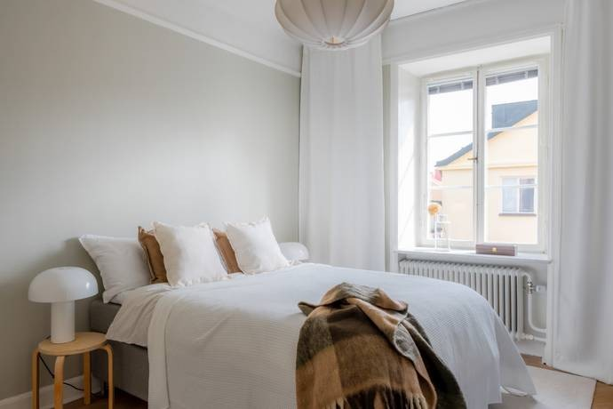 img_13 | × | + | × | × | × | × | × | × | × | × | × | × | × | × | + | + | × | × | × | × | × | × | |
 img_14 img_14 | × | × | × | + | × | × | + | × | × | × | × | × | + | × | × | × | × | × | × | × | × | × | |
 img_15 img_15 | × | × | × | × | × | × | + | × | × | × | × | × | + | × | × | × | × | × | × | × | × | + | |
 img_16_a img_16_a | × | × | × | × | + | × | × | × | × | × | × | × | × | × | × | × | × | × | × | × | × | × | |
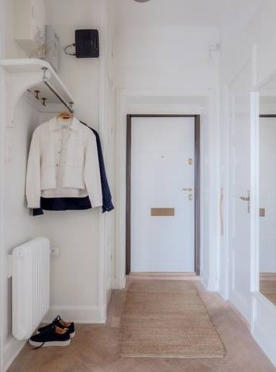 img_16_b | × | × | × | × | × | × | × | × | × | × | × | × | × | × | × | × | × | × | × | × | × | × | |
 img_17_a img_17_a | × | × | × | × | + | × | × | × | × | × | × | × | × | + | × | × | × | × | × | + | × | × | |
 img_17_b img_17_b | × | × | × | × | × | × | × | × | × | × | × | × | × | + | + | × | × | × | × | + | × | × | |
 img_18 img_18 | × | × | + | × | × | × | × | × | × | × | × | × | + | × | × | × | × | × | × | × | × | × | |
 img_2 img_2 | × | × | × | × | × | × | + | + | × | × | × | × | + | + | × | × | × | × | × | × | × | + | |
 img_3 img_3 | × | × | × | × | × | × | × | × | × | × | + | + | × | + | × | × | × | × | × | + | × | × | |
 img_4_a img_4_a | × | + | + | × | × | + | × | × | × | × | × | + | × | × | × | × | × | × | × | × | × | × | |
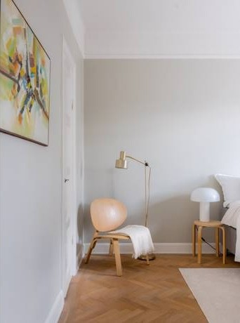 img_4_b | × | × | × | × | × | + | × | × | × | × | × | × | × | × | × | × | × | × | + | × | + | × | |
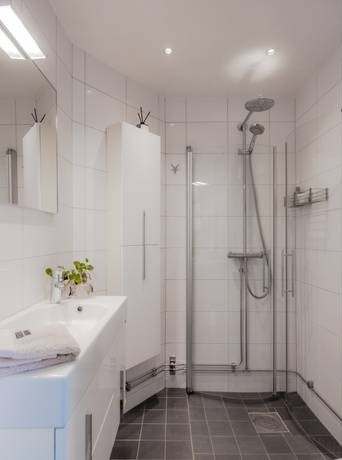 img_5_a | × | × | × | × | × | × | × | × | × | × | × | × | × | × | × | × | × | × | × | × | × | × | |
 img_5_b img_5_b | × | × | × | × | × | × | × | × | × | × | × | × | × | × | × | × | × | × | × | × | × | × | |
 img_6 img_6 | × | × | × | × | + | × | × | × | × | × | × | × | × | × | × | × | + | × | × | × | × | × | |
 img_7 img_7 | × | × | + | × | × | × | × | × | × | × | + | + | × | × | + | × | × | × | × | × | × | × | |
 img_8 img_8 | × | × | × | × | × | × | × | × | × | × | × | × | × | × | × | × | + | × | × | × | × | × | |
 img_9 img_9 | × | × | × | × | × | × | × | + | × | × | × | × | × | + | × | × | × | × | × | × | × | × |
| img_1 | img_10 | img_11_a | img_11_b | img_12 | img_13 | img_14 | img_15 | img_16_a | img_16_b | img_17_a | img_17_b | img_18 | img_2 | img_3 | img_4_a | img_4_b | img_5_a | img_5_b | img_6 | img_7 | img_8 | img_9 | |
|---|---|---|---|---|---|---|---|---|---|---|---|---|---|---|---|---|---|---|---|---|---|---|---|
| img_1 | × | × | × | + | × | × | × | × | × | × | × | × | × | × | × | × | × | × | + | × | × | × | |
| img_10 | × | × | × | × | + | × | × | × | × | × | × | × | × | × | + | × | × | × | × | × | × | × | |
| img_11_a | × | × | × | × | × | × | × | × | × | × | + | + | + | × | + | × | × | × | × | + | × | × | |
| img_11_b | × | × | × | × | × | + | + | × | × | × | × | × | + | + | × | × | × | × | × | × | × | + | |
| img_12 | + | × | × | × | × | × | × | + | × | × | × | × | × | × | × | × | × | × | + | × | × | × | |
| img_13 | × | + | × | × | × | × | × | × | × | × | × | × | × | × | + | + | × | × | × | × | × | × | |
| img_14 | × | × | × | + | × | × | + | × | × | × | × | + | + | + | × | × | × | × | × | × | × | + | |
| img_15 | × | × | × | + | × | × | + | × | × | × | × | × | + | × | × | × | × | × | × | × | × | + | |
| img_16_a | × | × | × | × | + | × | × | × | × | × | × | × | + | + | × | × | × | × | + | × | × | × | |
| img_16_b | × | × | × | × | × | × | × | × | × | × | × | × | × | × | × | × | × | × | × | × | + | × | |
| img_17_a | × | × | × | × | × | × | × | × | × | × | × | × | × | + | × | × | × | × | × | × | × | × | |
| img_17_b | × | × | + | × | × | × | × | × | × | × | × | × | × | × | × | × | × | × | × | + | × | × | |
| img_18 | × | × | + | × | × | × | + | × | × | × | × | × | + | × | × | × | × | × | × | × | × | × | |
| img_2 | × | × | + | + | × | × | + | + | + | × | × | × | + | + | × | × | × | × | × | × | × | + | |
| img_3 | × | × | × | + | × | × | + | × | + | × | + | × | × | + | × | × | × | × | × | + | × | × | |
| img_4_a | × | + | + | × | × | + | × | × | × | × | × | × | × | × | × | × | × | × | × | × | × | × | |
| img_4_b | × | × | × | × | × | + | × | × | × | × | × | × | × | × | × | × | × | × | × | × | + | × | |
| img_5_a | × | × | × | × | × | × | × | × | × | × | × | × | × | × | × | × | × | + | × | × | × | × | |
| img_5_b | × | × | × | × | × | × | × | × | × | × | × | × | × | × | × | × | × | + | × | × | × | × | |
| img_6 | + | × | × | × | + | × | × | × | + | × | × | × | × | × | × | × | × | × | × | × | × | × | |
| img_7 | × | × | + | × | × | × | × | × | × | × | × | + | × | × | + | × | × | × | × | × | × | × | |
| img_8 | × | × | × | × | × | × | × | × | × | + | × | × | × | × | × | × | + | × | × | × | × | × | |
| img_9 | × | × | × | + | × | × | + | + | × | × | × | × | × | + | × | × | × | × | × | × | × | × |
| img_1 | img_10 | img_11_a | img_11_b | img_12 | img_13 | img_14 | img_15 | img_16_a | img_16_b | img_17_a | img_17_b | img_18 | img_2 | img_3 | img_4_a | img_4_b | img_5_a | img_5_b | img_6 | img_7 | img_8 | img_9 | |
|---|---|---|---|---|---|---|---|---|---|---|---|---|---|---|---|---|---|---|---|---|---|---|---|
| img_1 | × | × | × | × | × | × | × | × | × | × | × | × | × | × | × | × | × | × | × | × | × | × | |
| img_10 | × | × | × | × | × | × | × | × | × | × | × | × | × | × | × | × | × | × | × | × | × | × | |
| img_11_a | × | × | × | × | × | × | × | × | × | × | × | + | × | × | × | × | × | × | × | × | × | × | |
| img_11_b | × | × | × | × | × | × | × | × | × | × | × | × | × | × | × | × | × | × | × | × | × | × | |
| img_12 | × | × | × | × | × | × | × | × | × | × | × | × | × | × | × | × | × | × | × | × | × | × | |
| img_13 | × | × | × | × | × | × | × | × | × | × | × | × | × | × | × | × | × | × | × | × | × | × | |
| img_14 | × | × | × | × | × | × | × | × | × | × | × | × | × | × | × | × | × | × | × | × | × | × | |
| img_15 | × | × | × | × | × | × | × | × | × | × | × | × | + | × | × | × | × | × | × | × | × | + | |
| img_16_a | × | × | × | × | × | × | × | × | × | × | × | × | × | × | × | × | × | × | × | × | × | × | |
| img_16_b | × | × | × | × | × | × | × | × | × | × | × | × | × | × | × | × | × | × | × | × | × | × | |
| img_17_a | × | × | × | × | × | × | × | × | × | × | × | × | × | × | × | × | × | × | × | × | × | × | |
| img_17_b | × | × | × | × | × | × | × | × | × | × | × | × | × | × | × | × | × | × | × | + | × | × | |
| img_18 | × | × | + | × | × | × | × | × | × | × | × | × | × | × | × | × | × | × | × | × | × | × | |
| img_2 | × | × | × | × | × | × | × | + | × | × | × | × | × | × | × | × | × | × | × | × | × | + | |
| img_3 | × | × | × | × | × | × | × | × | × | × | × | × | × | × | × | × | × | × | × | × | × | × | |
| img_4_a | × | × | × | × | × | × | × | × | × | × | × | × | × | × | × | × | × | × | × | × | × | × | |
| img_4_b | × | × | × | × | × | × | × | × | × | × | × | × | × | × | × | × | × | × | × | × | × | × | |
| img_5_a | × | × | × | × | × | × | × | × | × | × | × | × | × | × | × | × | × | × | × | × | × | × | |
| img_5_b | × | × | × | × | × | × | × | × | × | × | × | × | × | × | × | × | × | × | × | × | × | × | |
| img_6 | × | × | × | × | × | × | × | × | × | × | × | × | × | × | × | × | × | × | × | × | × | × | |
| img_7 | × | × | × | × | × | × | × | × | × | × | × | + | × | × | × | × | × | × | × | × | × | × | |
| img_8 | × | × | × | × | × | × | × | × | × | × | × | × | × | × | × | × | × | × | × | × | × | × | |
| img_9 | × | × | × | × | × | × | × | + | × | × | × | × | × | + | × | × | × | × | × | × | × | × |
| img_1 | img_10 | img_11_a | img_11_b | img_12 | img_13 | img_14 | img_15 | img_16_a | img_16_b | img_17_a | img_17_b | img_18 | img_2 | img_3 | img_4_a | img_4_b | img_5_a | img_5_b | img_6 | img_7 | img_8 | img_9 | |
|---|---|---|---|---|---|---|---|---|---|---|---|---|---|---|---|---|---|---|---|---|---|---|---|
| img_1 | × | × | × | + | × | × | × | × | × | × | × | × | × | × | × | × | × | × | × | × | × | × | |
| img_10 | × | × | × | × | × | × | × | × | × | × | × | × | × | × | × | × | × | × | × | × | × | × | |
| img_11_a | × | × | × | × | × | × | × | × | × | × | × | + | × | × | × | × | × | × | × | × | × | × | |
| img_11_b | × | × | × | × | × | × | × | × | × | × | × | × | × | × | × | × | × | × | × | × | × | × | |
| img_12 | + | × | × | × | × | × | × | × | × | × | × | × | × | × | × | × | × | × | × | × | × | × | |
| img_13 | × | × | × | × | × | × | × | × | × | × | × | × | × | × | + | × | × | × | × | × | × | × | |
| img_14 | × | × | × | × | × | × | × | × | × | × | × | × | × | × | × | × | × | × | × | × | × | × | |
| img_15 | × | × | × | × | × | × | × | × | × | × | × | × | + | × | × | × | × | × | × | × | × | + | |
| img_16_a | × | × | × | × | × | × | × | × | × | × | × | × | × | × | × | × | × | × | × | × | × | × | |
| img_16_b | × | × | × | × | × | × | × | × | × | × | × | × | × | × | × | × | × | × | × | × | × | × | |
| img_17_a | × | × | × | × | × | × | × | × | × | × | × | × | × | × | × | × | × | × | × | × | × | × | |
| img_17_b | × | × | × | × | × | × | × | × | × | × | × | × | × | × | × | × | × | × | × | + | × | × | |
| img_18 | × | × | + | × | × | × | × | × | × | × | × | × | × | × | × | × | × | × | × | × | × | × | |
| img_2 | × | × | × | × | × | × | × | + | × | × | × | × | × | × | × | × | × | × | × | × | × | + | |
| img_3 | × | × | × | × | × | × | × | × | × | × | × | × | × | × | × | × | × | × | × | × | × | × | |
| img_4_a | × | × | × | × | × | + | × | × | × | × | × | × | × | × | × | × | × | × | × | × | × | × | |
| img_4_b | × | × | × | × | × | × | × | × | × | × | × | × | × | × | × | × | × | × | × | × | × | × | |
| img_5_a | × | × | × | × | × | × | × | × | × | × | × | × | × | × | × | × | × | × | × | × | × | × | |
| img_5_b | × | × | × | × | × | × | × | × | × | × | × | × | × | × | × | × | × | × | × | × | × | × | |
| img_6 | × | × | × | × | × | × | × | × | × | × | × | × | × | × | × | × | × | × | × | × | × | × | |
| img_7 | × | × | × | × | × | × | × | × | × | × | × | + | × | × | × | × | × | × | × | × | × | × | |
| img_8 | × | × | × | × | × | × | × | × | × | × | × | × | × | × | × | × | × | × | × | × | × | × | |
| img_9 | × | × | × | × | × | × | × | + | × | × | × | × | × | + | × | × | × | × | × | × | × | × |
Все пары
Доступны фильтр по фото, статусу, поиск и сортировка нажатием на заголовок. 3D — медиана ошибки на отложенных областях, не ошибка относительно эталона.
| img_1 ↔ img_10 | Отклонено | 0.066 | Отклонено | 0.049 | Отклонено | 1.616 | Отклонено | 1.945 |
| img_1 ↔ img_11_a | Мало точек | — | Мало точек | — | Мало точек | — | Мало точек | — |
| img_1 ↔ img_11_b | Мало точек | — | Мало точек | — | Мало точек | — | Мало точек | — |
| img_1 ↔ img_12 | Отклонено | 0.059 | Принято | 0.043 | Отклонено | 0.070 | Принято | 0.068 |
| img_1 ↔ img_13 | Отклонено | 0.086 | Отклонено | 0.099 | Мало точек | — | Мало точек | — |
| img_1 ↔ img_14 | Мало точек | — | Мало точек | — | Мало точек | — | Мало точек | — |
| img_1 ↔ img_15 | Мало точек | — | Мало точек | — | Мало точек | — | Мало точек | — |
| img_1 ↔ img_16_a | Отклонено | 0.346 | Отклонено | 2.435 | Мало точек | — | Мало точек | — |
| img_1 ↔ img_16_b | Мало точек | — | Мало точек | — | Мало точек | — | Мало точек | — |
| img_1 ↔ img_17_a | Отклонено | 0.095 | Отклонено | 0.093 | Отклонено | 0.117 | Отклонено | 0.113 |
| img_1 ↔ img_17_b | Отклонено | 0.137 | Отклонено | 0.100 | Отклонено | 1.919 | Отклонено | 1.517 |
| img_1 ↔ img_18 | Отклонено | 0.089 | Отклонено | 0.076 | Мало точек | — | Мало точек | — |
| img_1 ↔ img_2 | Мало точек | — | Мало точек | — | Мало точек | — | Мало точек | — |
| img_1 ↔ img_3 | Отклонено | 0.117 | Отклонено | 0.081 | Отклонено | 1.742 | Отклонено | 1.810 |
| img_1 ↔ img_4_a | Мало точек | — | Мало точек | — | Мало точек | — | Мало точек | — |
| img_1 ↔ img_4_b | Мало точек | — | Мало точек | — | Мало точек | — | Мало точек | — |
| img_1 ↔ img_5_a | Мало точек | — | Мало точек | — | Мало точек | — | Мало точек | — |
| img_1 ↔ img_5_b | Мало точек | — | Мало точек | — | Мало точек | — | Мало точек | — |
| img_1 ↔ img_6 | Отклонено | 0.054 | Принято | 0.042 | Мало точек | — | Мало точек | — |
| img_1 ↔ img_7 | Отклонено | 0.124 | Отклонено | 0.098 | Мало точек | — | Мало точек | — |
| img_1 ↔ img_8 | Мало точек | — | Мало точек | — | Мало точек | — | Мало точек | — |
| img_1 ↔ img_9 | Мало точек | — | Мало точек | — | Отклонено | 1.663 | Отклонено | 1.685 |
| img_10 ↔ img_11_a | Отклонено | 0.147 | Отклонено | 0.150 | Отклонено | 2.359 | Отклонено | 2.371 |
| img_10 ↔ img_11_b | Отклонено | 0.318 | Отклонено | 0.349 | Мало точек | — | Мало точек | — |
| img_10 ↔ img_12 | Отклонено | 0.321 | Отклонено | 0.314 | Отклонено | 2.098 | Отклонено | 2.035 |
| img_10 ↔ img_13 | Принято | 0.062 | Принято | 0.061 | Отклонено | 0.433 | Отклонено | 0.459 |
| img_10 ↔ img_14 | Отклонено | 0.284 | Отклонено | 0.264 | Мало точек | — | Мало точек | — |
| img_10 ↔ img_15 | Мало точек | — | Мало точек | — | Отклонено | — | Отклонено | — |
| img_10 ↔ img_16_a | Отклонено | 0.659 | Отклонено | 1.360 | Мало точек | — | Мало точек | — |
| img_10 ↔ img_16_b | Мало точек | — | Мало точек | — | Мало точек | — | Мало точек | — |
| img_10 ↔ img_17_a | Мало точек | — | Мало точек | — | Отклонено | 1.571 | Отклонено | 1.421 |
| img_10 ↔ img_17_b | Мало точек | — | Мало точек | — | Мало точек | — | Мало точек | — |
| img_10 ↔ img_18 | Отклонено | 2.126 | Отклонено | 1.019 | Мало точек | — | Мало точек | — |
| img_10 ↔ img_2 | Мало точек | — | Мало точек | — | Отклонено | 3.416 | Отклонено | 2.826 |
| img_10 ↔ img_3 | Отклонено | 1.732 | Отклонено | 1.761 | Мало точек | — | Мало точек | — |
| img_10 ↔ img_4_a | Принято | 0.080 | Принято | 0.090 | Отклонено | 1.853 | Отклонено | 1.880 |
| img_10 ↔ img_4_b | Мало точек | — | Мало точек | — | Мало точек | — | Мало точек | — |
| img_10 ↔ img_5_a | Мало точек | — | Мало точек | — | Мало точек | — | Мало точек | — |
| img_10 ↔ img_5_b | Отклонено | 0.172 | Отклонено | 0.151 | Отклонено | 1.444 | Отклонено | 1.487 |
| img_10 ↔ img_6 | Отклонено | 0.060 | Отклонено | 0.043 | Отклонено | 1.527 | Отклонено | — |
| img_10 ↔ img_7 | Мало точек | — | Мало точек | — | Мало точек | — | Мало точек | — |
| img_10 ↔ img_8 | Отклонено | 0.051 | Отклонено | 0.054 | Мало точек | — | Мало точек | — |
| img_10 ↔ img_9 | Отклонено | 0.938 | Отклонено | 0.859 | Мало точек | — | Мало точек | — |
| img_11_a ↔ img_11_b | Мало точек | — | Мало точек | — | Мало точек | — | Мало точек | — |
| img_11_a ↔ img_12 | Мало точек | — | Мало точек | — | Мало точек | — | Мало точек | — |
| img_11_a ↔ img_13 | Мало точек | — | Мало точек | — | Мало точек | — | Мало точек | — |
| img_11_a ↔ img_14 | Отклонено | 0.105 | Отклонено | 0.106 | Мало точек | — | Мало точек | — |
| img_11_a ↔ img_15 | Отклонено | 0.127 | Отклонено | 0.106 | Мало точек | — | Мало точек | — |
| img_11_a ↔ img_16_a | Отклонено | 1.249 | Отклонено | 1.295 | Мало точек | — | Мало точек | — |
| img_11_a ↔ img_16_b | Отклонено | 0.057 | Отклонено | 0.016 | Мало точек | — | Мало точек | — |
| img_11_a ↔ img_17_a | Отклонено | 0.629 | Отклонено | 0.903 | Мало точек | — | Мало точек | — |
| img_11_a ↔ img_17_b | Отклонено | 0.107 | Принято | 0.068 | Мало точек | — | Мало точек | — |
| img_11_a ↔ img_18 | Принято | 0.060 | Принято | 0.040 | Принято | 0.074 | Принято | 0.056 |
| img_11_a ↔ img_2 | Отклонено | 0.106 | Принято | 0.073 | Мало точек | — | Мало точек | — |
| img_11_a ↔ img_3 | Отклонено | 0.105 | Отклонено | 0.104 | Мало точек | — | Мало точек | — |
| img_11_a ↔ img_4_a | Принято | 0.086 | Принято | 0.064 | Мало точек | — | Мало точек | — |
| img_11_a ↔ img_4_b | Мало точек | — | Мало точек | — | Мало точек | — | Мало точек | — |
| img_11_a ↔ img_5_a | Мало точек | — | Мало точек | — | Мало точек | — | Мало точек | — |
| img_11_a ↔ img_5_b | Отклонено | 0.437 | Отклонено | 0.237 | Мало точек | — | Мало точек | — |
| img_11_a ↔ img_6 | Мало точек | — | Мало точек | — | Мало точек | — | Мало точек | — |
| img_11_a ↔ img_7 | Принято | 0.070 | Принято | 0.062 | Мало точек | — | Мало точек | — |
| img_11_a ↔ img_8 | Отклонено | 0.322 | Отклонено | 0.338 | Мало точек | — | Мало точек | — |
| img_11_a ↔ img_9 | Отклонено | 0.164 | Отклонено | 0.137 | Мало точек | — | Мало точек | — |
| img_11_b ↔ img_12 | Мало точек | — | Мало точек | — | Мало точек | — | Мало точек | — |
| img_11_b ↔ img_13 | Мало точек | — | Мало точек | — | Мало точек | — | Мало точек | — |
| img_11_b ↔ img_14 | Принято | 0.061 | Принято | 0.048 | Отклонено | 0.053 | Отклонено | 0.064 |
| img_11_b ↔ img_15 | Отклонено | 0.117 | Принято | 0.046 | Мало точек | — | Мало точек | — |
| img_11_b ↔ img_16_a | Отклонено | 0.226 | Отклонено | 0.181 | Мало точек | — | Мало точек | — |
| img_11_b ↔ img_16_b | Мало точек | — | Мало точек | — | Мало точек | — | Мало точек | — |
| img_11_b ↔ img_17_a | Мало точек | — | Мало точек | — | Мало точек | — | Мало точек | — |
| img_11_b ↔ img_17_b | Отклонено | 0.259 | Отклонено | 0.259 | Мало точек | — | Мало точек | — |
| img_11_b ↔ img_18 | Отклонено | 0.132 | Отклонено | 0.176 | Мало точек | — | Мало точек | — |
| img_11_b ↔ img_2 | Отклонено | 0.169 | Принято | 0.066 | Мало точек | — | Мало точек | — |
| img_11_b ↔ img_3 | Отклонено | 0.142 | Принято | 0.154 | Мало точек | — | Мало точек | — |
| img_11_b ↔ img_4_a | Мало точек | — | Мало точек | — | Мало точек | — | Мало точек | — |
| img_11_b ↔ img_4_b | Мало точек | — | Мало точек | — | Мало точек | — | Мало точек | — |
| img_11_b ↔ img_5_a | Мало точек | — | Мало точек | — | Мало точек | — | Мало точек | — |
| img_11_b ↔ img_5_b | Отклонено | — | Отклонено | — | Мало точек | — | Мало точек | — |
| img_11_b ↔ img_6 | Отклонено | 0.084 | Отклонено | 0.128 | Мало точек | — | Мало точек | — |
| img_11_b ↔ img_7 | Мало точек | — | Мало точек | — | Мало точек | — | Мало точек | — |
| img_11_b ↔ img_8 | Отклонено | 0.440 | Отклонено | 0.433 | Мало точек | — | Мало точек | — |
| img_11_b ↔ img_9 | Отклонено | 0.213 | Принято | 0.079 | Отклонено | 0.337 | Отклонено | 0.217 |
| img_12 ↔ img_13 | Мало точек | — | Мало точек | — | Мало точек | — | Мало точек | — |
| img_12 ↔ img_14 | Отклонено | — | Отклонено | — | Мало точек | — | Мало точек | — |
| img_12 ↔ img_15 | Мало точек | — | Мало точек | — | Мало точек | — | Мало точек | — |
| img_12 ↔ img_16_a | Принято | 0.893 | Принято | 0.890 | Мало точек | — | Мало точек | — |
| img_12 ↔ img_16_b | Отклонено | 0.161 | Отклонено | 0.121 | Мало точек | — | Мало точек | — |
| img_12 ↔ img_17_a | Принято | 0.054 | Отклонено | 0.070 | Отклонено | 1.026 | Отклонено | 1.070 |
| img_12 ↔ img_17_b | Отклонено | 0.196 | Отклонено | 0.175 | Мало точек | — | Мало точек | — |
| img_12 ↔ img_18 | Отклонено | 1.582 | Отклонено | 1.825 | Мало точек | — | Мало точек | — |
| img_12 ↔ img_2 | Мало точек | — | Мало точек | — | Мало точек | — | Мало точек | — |
| img_12 ↔ img_3 | Отклонено | 0.080 | Отклонено | 0.069 | Отклонено | 2.164 | Отклонено | 2.218 |
| img_12 ↔ img_4_a | Отклонено | 0.130 | Отклонено | 0.141 | Мало точек | — | Мало точек | — |
| img_12 ↔ img_4_b | Мало точек | — | Мало точек | — | Мало точек | — | Мало точек | — |
| img_12 ↔ img_5_a | Мало точек | — | Мало точек | — | Мало точек | — | Мало точек | — |
| img_12 ↔ img_5_b | Отклонено | — | Отклонено | — | Мало точек | — | Мало точек | — |
| img_12 ↔ img_6 | Принято | 0.034 | Принято | 0.043 | Отклонено | 1.612 | Отклонено | 1.650 |
| img_12 ↔ img_7 | Отклонено | 0.083 | Отклонено | 0.088 | Мало точек | — | Мало точек | — |
| img_12 ↔ img_8 | Мало точек | — | Мало точек | — | Мало точек | — | Мало точек | — |
| img_12 ↔ img_9 | Мало точек | — | Мало точек | — | Мало точек | — | Мало точек | — |
| img_13 ↔ img_14 | Отклонено | 0.286 | Отклонено | 0.228 | Мало точек | — | Мало точек | — |
| img_13 ↔ img_15 | Мало точек | — | Мало точек | — | Мало точек | — | Мало точек | — |
| img_13 ↔ img_16_a | Мало точек | — | Мало точек | — | Мало точек | — | Мало точек | — |
| img_13 ↔ img_16_b | Мало точек | — | Мало точек | — | Отклонено | 1.942 | Отклонено | — |
| img_13 ↔ img_17_a | Мало точек | — | Мало точек | — | Мало точек | — | Мало точек | — |
| img_13 ↔ img_17_b | Отклонено | 0.536 | Отклонено | 0.596 | Мало точек | — | Мало точек | — |
| img_13 ↔ img_18 | Отклонено | 0.418 | Отклонено | 0.443 | Мало точек | — | Мало точек | — |
| img_13 ↔ img_2 | Мало точек | — | Мало точек | — | Мало точек | — | Мало точек | — |
| img_13 ↔ img_3 | Отклонено | 1.072 | Отклонено | 0.730 | Мало точек | — | Мало точек | — |
| img_13 ↔ img_4_a | Принято | 0.052 | Принято | 0.051 | Отклонено | 0.177 | Принято | 0.198 |
| img_13 ↔ img_4_b | Принято | 0.044 | Принято | 0.054 | Отклонено | 1.348 | Отклонено | 0.761 |
| img_13 ↔ img_5_a | Мало точек | — | Мало точек | — | Мало точек | — | Мало точек | — |
| img_13 ↔ img_5_b | Мало точек | — | Мало точек | — | Мало точек | — | Мало точек | — |
| img_13 ↔ img_6 | Мало точек | — | Мало точек | — | Отклонено | 1.357 | Отклонено | 1.456 |
| img_13 ↔ img_7 | Мало точек | — | Мало точек | — | Мало точек | — | Мало точек | — |
| img_13 ↔ img_8 | Отклонено | 0.159 | Отклонено | 0.212 | Мало точек | — | Мало точек | — |
| img_13 ↔ img_9 | Мало точек | — | Мало точек | — | Отклонено | 2.711 | Отклонено | 2.704 |
| img_14 ↔ img_15 | Принято | 0.091 | Принято | 0.098 | Отклонено | 0.139 | Отклонено | 0.091 |
| img_14 ↔ img_16_a | Отклонено | 0.325 | Отклонено | 0.337 | Мало точек | — | Мало точек | — |
| img_14 ↔ img_16_b | Мало точек | — | Мало точек | — | Мало точек | — | Мало точек | — |
| img_14 ↔ img_17_a | Мало точек | — | Мало точек | — | Мало точек | — | Мало точек | — |
| img_14 ↔ img_17_b | Отклонено | 0.336 | Отклонено | 0.370 | Мало точек | — | Мало точек | — |
| img_14 ↔ img_18 | Отклонено | 0.148 | Принято | 0.162 | Мало точек | — | Мало точек | — |
| img_14 ↔ img_2 | Принято | 0.112 | Принято | 0.089 | Отклонено | 0.348 | Отклонено | 0.402 |
| img_14 ↔ img_3 | Отклонено | 0.114 | Принято | 0.114 | Мало точек | — | Мало точек | — |
| img_14 ↔ img_4_a | Отклонено | 0.144 | Отклонено | 0.149 | Мало точек | — | Мало точек | — |
| img_14 ↔ img_4_b | Мало точек | — | Мало точек | — | Мало точек | — | Мало точек | — |
| img_14 ↔ img_5_a | Мало точек | — | Мало точек | — | Мало точек | — | Мало точек | — |
| img_14 ↔ img_5_b | Отклонено | 1.180 | Отклонено | — | Мало точек | — | Мало точек | — |
| img_14 ↔ img_6 | Отклонено | 0.055 | Отклонено | 0.084 | Мало точек | — | Мало точек | — |
| img_14 ↔ img_7 | Отклонено | 1.218 | Отклонено | 1.394 | Мало точек | — | Мало точек | — |
| img_14 ↔ img_8 | Отклонено | 1.099 | Отклонено | 0.240 | Мало точек | — | Мало точек | — |
| img_14 ↔ img_9 | Отклонено | 0.141 | Принято | 0.079 | Отклонено | 0.225 | Отклонено | 0.126 |
| img_15 ↔ img_16_a | Отклонено | 0.194 | Отклонено | 0.162 | Отклонено | 3.966 | Отклонено | 2.827 |
| img_15 ↔ img_16_b | Отклонено | 0.040 | Отклонено | 0.174 | Отклонено | 1.784 | Отклонено | 2.245 |
| img_15 ↔ img_17_a | Отклонено | 0.833 | Отклонено | 0.750 | Отклонено | 2.033 | Отклонено | 2.135 |
| img_15 ↔ img_17_b | Мало точек | — | Мало точек | — | Отклонено | — | Отклонено | 2.232 |
| img_15 ↔ img_18 | Отклонено | 0.112 | Отклонено | 0.112 | Мало точек | — | Мало точек | — |
| img_15 ↔ img_2 | Принято | 0.045 | Принято | 0.045 | Принято | 0.108 | Принято | 0.126 |
| img_15 ↔ img_3 | Отклонено | 0.186 | Отклонено | 0.189 | Отклонено | — | Отклонено | — |
| img_15 ↔ img_4_a | Мало точек | — | Мало точек | — | Отклонено | — | Отклонено | — |
| img_15 ↔ img_4_b | Мало точек | — | Мало точек | — | Отклонено | 2.088 | Отклонено | 2.714 |
| img_15 ↔ img_5_a | Мало точек | — | Мало точек | — | Отклонено | 2.534 | Отклонено | 2.546 |
| img_15 ↔ img_5_b | Отклонено | 0.384 | Отклонено | 0.224 | Отклонено | 1.836 | Отклонено | 1.581 |
| img_15 ↔ img_6 | Отклонено | 0.115 | Отклонено | 0.067 | Отклонено | — | Отклонено | 3.400 |
| img_15 ↔ img_7 | Мало точек | — | Мало точек | — | Отклонено | 2.442 | Отклонено | 2.545 |
| img_15 ↔ img_8 | Отклонено | 1.285 | Отклонено | 1.318 | Отклонено | — | Отклонено | — |
| img_15 ↔ img_9 | Принято | 0.055 | Принято | 0.060 | Принято | 0.094 | Принято | 0.100 |
| img_16_a ↔ img_16_b | Отклонено | 0.220 | Отклонено | 0.098 | Мало точек | — | Мало точек | — |
| img_16_a ↔ img_17_a | Отклонено | 1.833 | Отклонено | 1.725 | Мало точек | — | Мало точек | — |
| img_16_a ↔ img_17_b | Отклонено | 0.795 | Отклонено | 0.879 | Мало точек | — | Мало точек | — |
| img_16_a ↔ img_18 | Отклонено | 0.166 | Отклонено | 0.154 | Мало точек | — | Мало точек | — |
| img_16_a ↔ img_2 | Отклонено | 0.226 | Принято | 0.180 | Мало точек | — | Мало точек | — |
| img_16_a ↔ img_3 | Отклонено | 0.414 | Принято | 0.310 | Мало точек | — | Мало точек | — |
| img_16_a ↔ img_4_a | Мало точек | — | Мало точек | — | Мало точек | — | Мало точек | — |
| img_16_a ↔ img_4_b | Отклонено | 0.435 | Отклонено | 0.448 | Мало точек | — | Мало точек | — |
| img_16_a ↔ img_5_a | Мало точек | — | Мало точек | — | Мало точек | — | Мало точек | — |
| img_16_a ↔ img_5_b | Отклонено | 0.855 | Отклонено | 0.783 | Мало точек | — | Мало точек | — |
| img_16_a ↔ img_6 | Отклонено | 0.246 | Принято | 0.264 | Мало точек | — | Мало точек | — |
| img_16_a ↔ img_7 | Отклонено | 0.757 | Отклонено | 0.571 | Мало точек | — | Мало точек | — |
| img_16_a ↔ img_8 | Отклонено | 1.454 | Отклонено | 1.533 | Мало точек | — | Мало точек | — |
| img_16_a ↔ img_9 | Отклонено | 0.295 | Отклонено | 0.246 | Мало точек | — | Мало точек | — |
| img_16_b ↔ img_17_a | Отклонено | 0.893 | Отклонено | 1.356 | Мало точек | — | Мало точек | — |
| img_16_b ↔ img_17_b | Отклонено | 0.745 | Отклонено | 0.865 | Мало точек | — | Мало точек | — |
| img_16_b ↔ img_18 | Отклонено | 1.262 | Отклонено | 1.404 | Мало точек | — | Мало точек | — |
| img_16_b ↔ img_2 | Мало точек | — | Мало точек | — | Мало точек | — | Мало точек | — |
| img_16_b ↔ img_3 | Отклонено | 0.123 | Отклонено | 0.079 | Мало точек | — | Мало точек | — |
| img_16_b ↔ img_4_a | Мало точек | — | Мало точек | — | Мало точек | — | Мало точек | — |
| img_16_b ↔ img_4_b | Мало точек | — | Мало точек | — | Мало точек | — | Мало точек | — |
| img_16_b ↔ img_5_a | Мало точек | — | Мало точек | — | Мало точек | — | Мало точек | — |
| img_16_b ↔ img_5_b | Отклонено | 0.852 | Отклонено | 0.680 | Мало точек | — | Мало точек | — |
| img_16_b ↔ img_6 | Мало точек | — | Мало точек | — | Мало точек | — | Мало точек | — |
| img_16_b ↔ img_7 | Мало точек | — | Мало точек | — | Мало точек | — | Мало точек | — |
| img_16_b ↔ img_8 | Отклонено | 0.074 | Принято | 0.069 | Мало точек | — | Мало точек | — |
| img_16_b ↔ img_9 | Мало точек | — | Мало точек | — | Мало точек | — | Мало точек | — |
| img_17_a ↔ img_17_b | Отклонено | 0.112 | Отклонено | 0.110 | Мало точек | — | Мало точек | — |
| img_17_a ↔ img_18 | Отклонено | 0.852 | Отклонено | 0.679 | Мало точек | — | Мало точек | — |
| img_17_a ↔ img_2 | Отклонено | 1.547 | Отклонено | 1.742 | Мало точек | — | Мало точек | — |
| img_17_a ↔ img_3 | Принято | 0.093 | Принято | 0.084 | Мало точек | — | Мало точек | — |
| img_17_a ↔ img_4_a | Отклонено | 0.419 | Отклонено | 0.483 | Мало точек | — | Мало точек | — |
| img_17_a ↔ img_4_b | Мало точек | — | Мало точек | — | Мало точек | — | Мало точек | — |
| img_17_a ↔ img_5_a | Мало точек | — | Мало точек | — | Мало точек | — | Мало точек | — |
| img_17_a ↔ img_5_b | Мало точек | — | Мало точек | — | Мало точек | — | Мало точек | — |
| img_17_a ↔ img_6 | Отклонено | 0.067 | Отклонено | 0.081 | Мало точек | — | Мало точек | — |
| img_17_a ↔ img_7 | Принято | 0.067 | Отклонено | 0.085 | Мало точек | — | Мало точек | — |
| img_17_a ↔ img_8 | Отклонено | 1.285 | Отклонено | 1.241 | Мало точек | — | Мало точек | — |
| img_17_a ↔ img_9 | Мало точек | — | Мало точек | — | Мало точек | — | Мало точек | — |
| img_17_b ↔ img_18 | Отклонено | 0.770 | Отклонено | 1.262 | Мало точек | — | Мало точек | — |
| img_17_b ↔ img_2 | Мало точек | — | Мало точек | — | Мало точек | — | Мало точек | — |
| img_17_b ↔ img_3 | Принято | 0.294 | Отклонено | 0.333 | Мало точек | — | Мало точек | — |
| img_17_b ↔ img_4_a | Принято | 0.067 | Отклонено | 0.094 | Мало точек | — | Мало точек | — |
| img_17_b ↔ img_4_b | Мало точек | — | Мало точек | — | Мало точек | — | Мало точек | — |
| img_17_b ↔ img_5_a | Отклонено | 0.430 | Отклонено | 0.411 | Мало точек | — | Мало точек | — |
| img_17_b ↔ img_5_b | Отклонено | 0.216 | Отклонено | 0.228 | Мало точек | — | Мало точек | — |
| img_17_b ↔ img_6 | Отклонено | 0.106 | Отклонено | 0.146 | Мало точек | — | Мало точек | — |
| img_17_b ↔ img_7 | Принято | 0.033 | Принято | 0.036 | Принято | 0.053 | Принято | 0.049 |
| img_17_b ↔ img_8 | Мало точек | — | Мало точек | — | Мало точек | — | Мало точек | — |
| img_17_b ↔ img_9 | Мало точек | — | Мало точек | — | Мало точек | — | Мало точек | — |
| img_18 ↔ img_2 | Принято | 0.114 | Принято | 0.097 | Отклонено | 2.441 | Отклонено | 2.309 |
| img_18 ↔ img_3 | Отклонено | 0.135 | Отклонено | 0.136 | Мало точек | — | Мало точек | — |
| img_18 ↔ img_4_a | Отклонено | 2.104 | Отклонено | 2.764 | Отклонено | 3.333 | Отклонено | 3.300 |
| img_18 ↔ img_4_b | Отклонено | — | Отклонено | — | Мало точек | — | Мало точек | — |
| img_18 ↔ img_5_a | Мало точек | — | Мало точек | — | Отклонено | — | Отклонено | — |
| img_18 ↔ img_5_b | Отклонено | — | Отклонено | — | Мало точек | — | Мало точек | — |
| img_18 ↔ img_6 | Мало точек | — | Мало точек | — | Мало точек | — | Мало точек | — |
| img_18 ↔ img_7 | Отклонено | 1.154 | Отклонено | 1.131 | Мало точек | — | Мало точек | — |
| img_18 ↔ img_8 | Отклонено | 2.294 | Отклонено | 1.715 | Мало точек | — | Мало точек | — |
| img_18 ↔ img_9 | Отклонено | 0.147 | Отклонено | 0.163 | Отклонено | 3.420 | Отклонено | 4.530 |
| img_2 ↔ img_3 | Принято | 0.154 | Принято | 0.175 | Отклонено | 3.030 | Отклонено | 3.468 |
| img_2 ↔ img_4_a | Мало точек | — | Мало точек | — | Отклонено | 2.318 | Отклонено | 2.271 |
| img_2 ↔ img_4_b | Отклонено | 0.087 | Отклонено | 0.065 | Мало точек | — | Мало точек | — |
| img_2 ↔ img_5_a | Мало точек | — | Мало точек | — | Мало точек | — | Мало точек | — |
| img_2 ↔ img_5_b | Отклонено | 0.640 | Отклонено | 0.652 | Мало точек | — | Мало точек | — |
| img_2 ↔ img_6 | Отклонено | 0.141 | Отклонено | 0.080 | Отклонено | 2.116 | Отклонено | 2.094 |
| img_2 ↔ img_7 | Отклонено | 0.153 | Отклонено | 0.148 | Отклонено | 2.286 | Отклонено | 2.848 |
| img_2 ↔ img_8 | Отклонено | 2.099 | Отклонено | 2.391 | Мало точек | — | Мало точек | — |
| img_2 ↔ img_9 | Принято | 0.047 | Принято | 0.056 | Принято | 0.084 | Принято | 0.078 |
| img_3 ↔ img_4_a | Отклонено | 0.289 | Отклонено | 0.253 | Мало точек | — | Мало точек | — |
| img_3 ↔ img_4_b | Мало точек | — | Мало точек | — | Мало точек | — | Мало точек | — |
| img_3 ↔ img_5_a | Отклонено | 0.194 | Отклонено | 0.209 | Мало точек | — | Мало точек | — |
| img_3 ↔ img_5_b | Отклонено | 1.077 | Отклонено | 1.099 | Мало точек | — | Мало точек | — |
| img_3 ↔ img_6 | Отклонено | 0.199 | Отклонено | 0.247 | Мало точек | — | Мало точек | — |
| img_3 ↔ img_7 | Принято | 0.109 | Принято | 0.161 | Мало точек | — | Мало точек | — |
| img_3 ↔ img_8 | Мало точек | — | Мало точек | — | Мало точек | — | Мало точек | — |
| img_3 ↔ img_9 | Отклонено | 0.300 | Отклонено | 0.263 | Отклонено | 3.153 | Отклонено | 3.352 |
| img_4_a ↔ img_4_b | Отклонено | — | Отклонено | — | Мало точек | — | Мало точек | — |
| img_4_a ↔ img_5_a | Мало точек | — | Мало точек | — | Мало точек | — | Мало точек | — |
| img_4_a ↔ img_5_b | Отклонено | 1.793 | Отклонено | 1.783 | Мало точек | — | Мало точек | — |
| img_4_a ↔ img_6 | Мало точек | — | Мало точек | — | Мало точек | — | Мало точек | — |
| img_4_a ↔ img_7 | Отклонено | 1.474 | Отклонено | 1.616 | Мало точек | — | Мало точек | — |
| img_4_a ↔ img_8 | Отклонено | 0.075 | Отклонено | 0.095 | Мало точек | — | Мало точек | — |
| img_4_a ↔ img_9 | Мало точек | — | Мало точек | — | Мало точек | — | Мало точек | — |
| img_4_b ↔ img_5_a | Мало точек | — | Мало точек | — | Мало точек | — | Мало точек | — |
| img_4_b ↔ img_5_b | Мало точек | — | Мало точек | — | Мало точек | — | Мало точек | — |
| img_4_b ↔ img_6 | Принято | 0.090 | Отклонено | 0.325 | Мало точек | — | Мало точек | — |
| img_4_b ↔ img_7 | Мало точек | — | Мало точек | — | Мало точек | — | Мало точек | — |
| img_4_b ↔ img_8 | Принято | 0.127 | Принято | 0.043 | Мало точек | — | Мало точек | — |
| img_4_b ↔ img_9 | Мало точек | — | Мало точек | — | Мало точек | — | Мало точек | — |
| img_5_a ↔ img_5_b | Отклонено | 0.131 | Принято | 0.097 | Отклонено | 0.197 | Отклонено | 0.170 |
| img_5_a ↔ img_6 | Мало точек | — | Мало точек | — | Мало точек | — | Мало точек | — |
| img_5_a ↔ img_7 | Отклонено | 0.229 | Отклонено | 0.252 | Мало точек | — | Мало точек | — |
| img_5_a ↔ img_8 | Отклонено | 0.129 | Отклонено | 0.154 | Мало точек | — | Мало точек | — |
| img_5_a ↔ img_9 | Мало точек | — | Мало точек | — | Мало точек | — | Мало точек | — |
| img_5_b ↔ img_6 | Отклонено | — | Отклонено | — | Мало точек | — | Мало точек | — |
| img_5_b ↔ img_7 | Мало точек | — | Мало точек | — | Мало точек | — | Мало точек | — |
| img_5_b ↔ img_8 | Отклонено | 1.131 | Отклонено | 1.578 | Мало точек | — | Мало точек | — |
| img_5_b ↔ img_9 | Отклонено | 0.108 | Отклонено | 0.081 | Мало точек | — | Мало точек | — |
| img_6 ↔ img_7 | Отклонено | 0.080 | Отклонено | 0.094 | Мало точек | — | Мало точек | — |
| img_6 ↔ img_8 | Отклонено | 0.602 | Отклонено | 0.598 | Мало точек | — | Мало точек | — |
| img_6 ↔ img_9 | Отклонено | 0.229 | Отклонено | 0.135 | Отклонено | — | Отклонено | — |
| img_7 ↔ img_8 | Отклонено | 0.178 | Отклонено | 0.185 | Мало точек | — | Мало точек | — |
| img_7 ↔ img_9 | Отклонено | — | Отклонено | — | Мало точек | — | Мало точек | — |
| img_8 ↔ img_9 | Отклонено | 0.706 | Отклонено | 0.815 | Мало точек | — | Мало точек | — |
Все фотографии
Протокол и данные
Пять коллажей образца Blueprint разделены вручную. План и смысл имён не используются. Пороги 3D-проверки сохранены. SIFT: тест отношения 0,8; RoMa: оценка ≥0,2. F-маски и старые группы SIFT не фильтруют входные пары. Различие плотности соответствий учитывается при чтении отказов; маски глубины не являются проверкой качества.